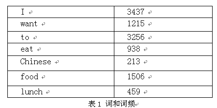
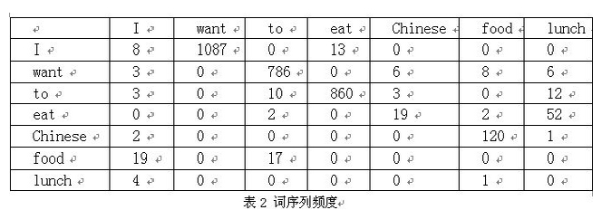

0.研究现状
Deep Learning 算法已经在图像和音频领域取得了惊人的成果，但是在 NLP 领域中尚未见到如此激动人心的结果。有一种说法是，语言（词、句子、篇章等）属于人类认知过程中产生的高层认知抽象实体，而语音和图像属于较为底层的原始输入信号，所以后两者更适合做deep learning来学习特征。
1.什么是词向量
Deep Learning 中一般用到的词向量并不是刚才提到的用 One-hot Representation 表示的那种很长很长的词向量，而是用 Distributed Representation（不知道这个应该怎么翻译，因为还存在一种叫“Distributional Representation”的表示方法，又是另一个不同的概念）表示的一种低维实数向量。这种向量一般长成这个样子：[0.792, −0.177, −0.107, 0.109, −0.542, …]。维度以 50 维和 100 维比较常见。这种向量的表示不是唯一的，后文会提到目前计算出这种向量的主流方法。
Distributed representation 最大的贡献就是让相关或者相似的词，在距离上更接近了。向量的距离可以用最传统的欧氏距离来衡量，也可以用 cos 夹角来衡量。用这种方式表示的向量，“麦克”和“话筒”的距离会远远小于“麦克”和“天气”。可能理想情况下“麦克”和“话筒”的表示应该是完全一样的，但是由于有些人会把英文名“迈克”也写成“麦克”，导致“麦克”一词带上了一些人名的语义，因此不会和“话筒”完全一致。
2.词向量的训练
要介绍词向量是怎么训练得到的，就不得不提到语言模型。到目前为止我了解到的所有训练方法都是在训练语言模型的同时，顺便得到词向量的。
这里介绍的工作均为从大量未标注的普通文本数据中无监督地学习出词向量（语言模型本来就是基于这个想法而来的），可以猜测，如果用上了有标注的语料，训练词向量的方法肯定会更多。不过视目前的语料规模，还是使用未标注语料的方法靠谱一些。
词向量的训练最经典的有 3 个工作，C&W 2008、M&H 2008、Mikolov 2010。当然在说这些工作之前，不得不介绍一下这一系列中 Bengio 的经典之作。
2.1相关知识介绍
2.1.1条件概率知识
定理1
设A，B 是两个事件，且A不是不可能事件，则称为在事件A发生的条件下，事件B发生的条件概率。一般地，且它满足以下三条件：1.非负性；2.规范性；3.可列可加性。
定理2
设E 为随机试验，Ω 为样本空间，A，B 为任意两个事件，设P(A)>0，称 为在“事件A 发生”的条件下事件B 的条件概率。
上述乘法公式可推广到任意有穷多个事件时的情况。设A1，A2，…An为任意n 个事件（n≥2）且，则
但是这种方法存在两个致命的缺陷：一个缺陷是参数空间过大，不可能实用化；另外一个缺陷是数据稀疏严重。
为了解决这个问题，我们引入了马尔科夫假设：一个词的出现仅仅依赖于它前面出现的有限的一个或者几个词。
如果一个词的出现仅依赖于它前面出现的一个词，那么我们就称之为bigram。即
2.1.2语言模型简介
语言模型形式化的描述就是给定一个字符串，看它是自然语言的概率 P(w1,w2,…,wt)。w1 到 wt 依次表示这句话中的各个词。有个很简单的推论是：
常用的语言模型都是在近似地求P(wt|w1,w2,…,wt−1).比如n-gram模型就是用P(wt|wt−n+1,…,wt−1)近似表示前者。
2.1.3N-Gram模型
- N-Gram是大词汇连续语音识别中常用的一种语言模型，对中文而言，我们称之为汉语语言模型(CLM, Chinese Language Model)。汉语语言模型利用上下文中相邻词间的搭配信息，在需要把连续无空格的拼音、笔划，或代表字母或笔划的数字，转换成汉字串(即句子)时，可以计算出具有最大概率的句子，从而实现到汉字的自动转换，无需用户手动选择，避开了许多汉字对应一个相同的拼音(或笔划串，或数字串)的重码问题。
该模型基于这样一种假设，第n个词的出现只与前面N-1个词相关，而与其它任何词都不相关，整句的概率就是各个词出现概率的乘积。这些概率可以通过直接从语料中统计N个词同时出现的次数得到。常用的是二元的Bi-Gram和三元的Tri-Gram。 在介绍N-gram模型之前，让我们先来做个香农游戏（Shannon Game）。我们给定一个词，然后猜测下一个词是什么。当我说“艳照门”这个词时，你想到下一个词是什么呢？我想大家很有可能会想到“陈冠希”，基本上不会有人会想到“陈志杰”吧。N-gram模型的主要思想就是这样的。
对于一个句子T，我们怎么算它出现的概率呢？假设T是由词序列W1,W2,W3,…Wn组成的，那么
- 如果一个词的出现仅依赖于它前面出现的两个词，那么我们就称之为trigram。
在实践中用的最多的就是bigram和trigram了，而且效果很不错。高于四元的用的很少，因为训练它需要更庞大的语料，而且数据稀疏严重，时间复杂度高，精度却提高的不多。
那么我们怎么得到P(Wn|W1W2…Wn-1)呢？一种简单的估计方法就是最大似然估计(Maximum Likelihood Estimate）了。即
- 剩下的工作就是在训练语料库中数数儿了，即统计序列
C(W1 W2…Wn)出现的次数和C(W1 W2…Wn-1)出现的次数。下面我们用bigram举个例子。假设语料库总词数为13,748  
计算结果： P(I want to eat Chinese food) =P(I)P(want|I)P(to|want)P(eat|to)P(Chinese|eat)P(food|Chinese) =0.251087/3437786/1215860/325619/938120/213 =0.000154171
- 了解了噪声信道模型和
N-gram模型的思想之后，其实我们自己就能实现一个音词转换系统了，它是整句智能输入法的核心，其实我们不难猜到，搜狗拼音和微软拼音的主要思想就是N-gram模型的，不过在里面多加入了一些语言学规则而已。
2.2对词向量训练的不同方法
Natural language processing is one of the most important technologies of the information age. Understanding complex language utterances is also a crucial part of artificial intelligence. Applications of NLP are everywhere because people communicate most everything in language: web search, advertisement, emails, customer service, language translation, radiology reports, etc. There are a large variety of underlying tasks and machine learning models powering NLP applications. Recently, deep learning approaches have obtained very high performance across many different NLP tasks. These models can often be trained with a single end-to-end model and do not require traditional, task-specific feature engineering.
2.2.1Bengio 的经典之作
A Neural Probabilistic Language Model
author:Yoshua Bengio
We propose to fight thecurse of dimensionality by learning a distributed representation for words which allows eachtraining sentence to inform the model about an exponential number of semantically neighboring senten.
1.Fighting the Curse of Dimensionality with Distributed Representations
In a nutshell, the idea of the proposed approach can be summarized as follows:
- associate with each word in the vocabulary a distributed word feature vector (a real- valued vector in R m ),
- express the joint probability function of word sequences in terms of the feature vectors of these words in the sequence, and
- learn simultaneously the word feature vectors and the parameters of that probability function.
1.2 Relation to Previous Work
The idea of using neural networks to model high-dimensional discrete distributions has already
been found useful to learn the joint probability of Z 1 · · · Z n , a set of random variables where each is
possibly of a different nature (Bengio and Bengio, 2000a,b). In that model, the joint probability is
decomposed as a product of conditional probabilities
2.A Neural Model

图中最下方的 1wt−n+1,…,wt−2,wt−11 就是前 n−1 个词。现在需要根据这已知的 n−1 个词预测下一个词 wt。C(w) 表示词 w 所对应的词向量，整个模型中使用的是一套唯一的词向量，存在矩阵 C（一个 |V|×m 的矩阵）中。其中 |V| 表示词表的大小（语料中的总词数），m 表示词向量的维度。w 到 C(w) 的转化就是从矩阵中取出一行。
网络的第一层（输入层）是将 C(wt−n+1),…,C(wt−2),C(wt−1) 这 n−1 个向量首尾相接拼起来，形成一个 (n−1)m 维的向量，下面记为 x。
网络的第二层（隐藏层）就如同普通的神经网络，直接使用 d+Hx 计算得到。d 是一个偏置项。在此之后，使用 tanh 作为激活函数。
网络的第三层（输出层）一共有 |V| 个节点，每个节点 yi 表示 下一个词为 i 的未归一化 log 概率。最后使用 softmax 激活函数将输出值 y 归一化成概率。最终，y 的计算公式为：
式子中的 U（一个 |V|×h 的矩阵）是隐藏层到输出层的参数，整个模型的多数计算集中在 U 和隐藏层的矩阵乘法中。后文的提到的 3 个工作，都有对这一环节的简化，提升计算的速度。
式子中还有一个矩阵 W（|V|×(n−1)m），这个矩阵包含了从输入层到输出层的直连边。直连边就是从输入层直接到输出层的一个线性变换，好像也是神经网络中的一种常用技巧（没有仔细考察过）。如果不需要直连边的话，将 W 置为 0 就可以了。在最后的实验中，Bengio 发现直连边虽然不能提升模型效果，但是可以少一半的迭代次数。同时他也猜想如果没有直连边，可能可以生成更好的词向量。
现在万事俱备，用随机梯度下降法把这个模型优化出来就可以了。
需要注意的是，一般神经网络的输入层只是一个输入值，而在这里，输入层 x 也是参数（存在 C 中），也是需要优化的。优化结束之后，词向量有了，语言模型也有了。
这样得到的语言模型自带平滑，无需传统 n-gram 模型中那些复杂的平滑算法。Bengio 在 APNews 数据集上做的对比实验也表明他的模型效果比精心设计平滑算法的普通 n-gram 算法要好 10% 到 20%。
———————————————————————————未完待续————————————————————————–
参考文献资料：
ngram模型：CSDN博客网址
DeepLearning in NLP:licstar的博客
Yoshua Bengio, Rejean Ducharme, Pascal Vincent, and Christian Jauvin. A neural probabilistic language model. Journal of Machine Learning Research (JMLR), 3:1137–1155, 2003. PDF